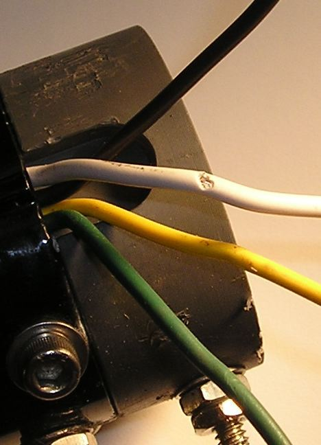
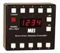
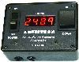
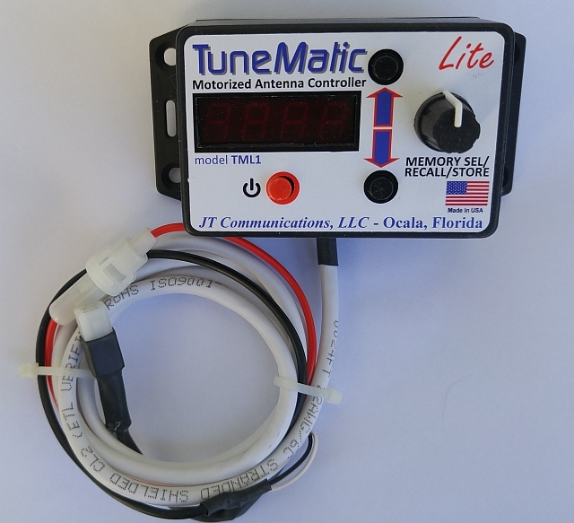
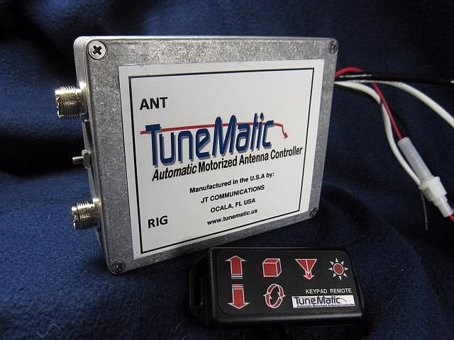
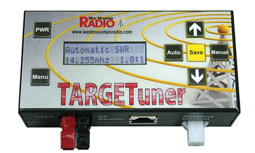
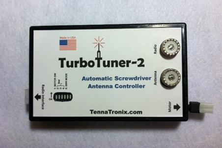

<img> as data-original-src.
Contents:Basics; Proper RF Bypassing; Other Caveats; SWR Considerations; How They Work, Reed Switch Type; How They Work, SWR Detect Type; Manual Controllers; Stepper Controllers; Odds & Ends;
All remotely controlled HF mobile antennas require some sort of device to control the motor. It may be as simple as a DPDT rocker switch, to a fully-automated system requiring minimal attention from the operator. Whatever system is used, there are several prerequisites which must be performed to assure smooth operation. First, the motor leads must be properly RF choked, and most factory-supplied (or described) ones are inadequate for the purpose. If the reed switch (turns counter) is used, they too must be properly choked. For best results, separate chokes should be used. How to properly choke them is covered below.
Every single mobile installation will have some level of common mode current flowing on the coax. If you fail to properly choke common mode, the coax cable will become part of the antenna system! The highlighted article explains how that is accomplished.
Properly matching is also a prerequisite. The highlighted article explains how that is accomplished. This said, if your antenna doesn't need matching to achieve a low SWR, you either need a better antenna, better mounting scheme, or both!
Short, stubby, HF mobile antennas are very popular due to their diminutive size, light weight, and apparent ease of mounting (they're not necessarily less expensive). They exhibit several unforeseen consequences because of their diminutive size, not the least of which is their miniscule motor, which is easily damaged under stall conditions. If you opt for an automatic controller, make sure the controller manufacturer's instructions are followed closely to avoid damage to the motor.
The motor and reed switch leads of all remotely controlled antennas operate above RF ground potential. The amount of RF present on the leads depends on several factors, especially where, and how the antenna is mounted. It is not uncommon for the RF voltage to be as high as 250 volts, and in a few cases, nearly 1,000 volts! That's high enough to zap any solid state controller!
The chokes must be installed outside the vehicle, and as near to the base of the antenna as possible. If you mount them inside, you will be plagued with RFI issues, including erratic controller operation. Remember, everything before the choke is part of the antenna, and will both radiate and receive, adding to the background noise level we all have to content with.
Most antenna manufacturers supply ferrite beads or toroids with their antennas for use as chokes. Unfortunately, most are inadequate for the purpose because they are physically to small and/or the incorrect material (mix) and/or not enough suggested turns.
 As a rule of thumb, a choke should have an impedance at least two magnitudes greater than the impedance of the circuit it is applied to. In other words, at least 5k ohms, and perhaps 2 or 3 times this in some cases (i.e.: short, stubby antennas and/or poor mounting schemes). Mix 31 split beads are ideal for this application, but it takes 8 turns to equal 5k ohms. Thus, you'll need to use the 3/4 inch ID ones. If your antenna (or controller) didn't come with these specific split beads, they're available from DX Engineering, and other amateur radio dealers. A package of five of the 3/4 inch ID units costs about $35. Don't assume you can get by with a lessor number of turns, or a different ferrite mix. You can't!
As a rule of thumb, a choke should have an impedance at least two magnitudes greater than the impedance of the circuit it is applied to. In other words, at least 5k ohms, and perhaps 2 or 3 times this in some cases (i.e.: short, stubby antennas and/or poor mounting schemes). Mix 31 split beads are ideal for this application, but it takes 8 turns to equal 5k ohms. Thus, you'll need to use the 3/4 inch ID ones. If your antenna (or controller) didn't come with these specific split beads, they're available from DX Engineering, and other amateur radio dealers. A package of five of the 3/4 inch ID units costs about $35. Don't assume you can get by with a lessor number of turns, or a different ferrite mix. You can't!
The photo at right shows a properly-wound motor lead choke. The How To Wind A Choke article explains the winding procedure.
The average remotely-controlled HF antenna draws about 250 to 300 mils while running, and somewhat over 1 amp when stalled. There are exceptions, of course. One model draws 2.5 amps while running, and nearly 8 amps at stall! Thus accessory sockets and data ports should not be used to power any load over the maximum specified by the manufacturer. For example, Icom specifies a maximum of one amp (total) for its various ports, as does Yaesu. Although these ports are fused, in most cases a circuit board trace or switching transistor will fail before the fuse blows, resulting in an expensive fix.
 To avoid this possibility, it is good advice to use a RigRunner or similar device for the power feed to the controller, and any other ancillary device(s) in use. In most cases, the circuit should be protected with a fuse no larger than 3 amps, and no larger than .5 amps if you're using a Lil Tarheel. This protects the controller, and the antenna's motor from damage.
To avoid this possibility, it is good advice to use a RigRunner or similar device for the power feed to the controller, and any other ancillary device(s) in use. In most cases, the circuit should be protected with a fuse no larger than 3 amps, and no larger than .5 amps if you're using a Lil Tarheel. This protects the controller, and the antenna's motor from damage.
There is another equally important caveat to remember if you're thinking about upgrading from an Icom IC-706 to a new IC-7000/7100/7200. Most devices which work flawlessly with a 706, will damage a 7000 series beyond repair! Here's why.
The 706, and the 7000 series differ in the way their tuner port is configured. Therefore, what works okay with the 706, may not work okay with the 7000 series. The reason is, a lot of the 706 devices place a resistor and a cap between Pins 3 (13.8 vdc) and Pin 2 (TSTART) as a time constant. Doing this on a 7000 series stops the fan from running, which assures the finals will fail! Further, Pin 1 (TKEY) is also shared internally with the temperature control circuitry, and must be left floating.
To reiterate, non-computerized devices used to mimic the AH-4, and trick the IC-706 into transmitting 10 watts of carrier are not compatible with the 7000 series. This includes the suggested circuitry from SGC, at least three of the older model screwdriver controllers, and most small tuner modules. So do yourself a favor; even if your old 706 unit appears to work correctly with your 7000 series, don't use it!
There are at least two screwdriver antenna brands which use a slip clutch (or interrupted threads) to protect the motor when the antenna reaches one end of its travel. Thus the difference between run and stall current, is less than what can be detected by the circuitry built into most automatic controllers. In at least one model, the turns-counting reed switch continues to count turns, even when the antenna is at one end or the other. This limits the choice of antenna controllers to manual ones, which are less than ideal.
Shorted control leads is a rare occurrence, but happens often enough to be of concern. When you first unpack your antenna, carefully look over the leads where they exit the antenna base structure. Look for any breaks, cuts, or abrasions in the leads. Check for any continuity between each lead and the mast of the antenna; there shouldn't be any! If there is, call your supplier before installation begins.

After you install your antenna, you should repeat the continuity check. It pays to remember an important point. If any of the leads are shorted to the mast of the antenna, properly RF choked or not, transmitting will destroy what ever controller is attached.
Lastly, some mail software programs which use the data interface built into the transceiver can cause compatibility issues with some controllers if they're not set up correctly.
As mentioned above, proper antenna impedance matching is a absolute prerequisite when using an SWR detecting controller. While this is covered well in my Antenna Coil Adjustment article, it bears repeating here. The use of UNUNs, switchable capacitance boxes, and autotransformers have their places, but if you're using an SWR detecting antenna controller, a fixed shunt coil is the only correct solution assuming you want true, automatic operation.
 Shunt matching coils are easy to make, but require some setup time for best results. If you follow the instructions in the aforementioned article, and take your time adjusting the coil's spacing (inductance), you'll find a setting that will provide an adequately low SWR (<1.6:1) from 80 through 10meters. And do yourself a favor; buy an antenna analyzer with a reactance readout, like an MFJ-259B or better. Nowadays, they're as important as SWR bridges were during the 50s, 60s, and 70s.
Shunt matching coils are easy to make, but require some setup time for best results. If you follow the instructions in the aforementioned article, and take your time adjusting the coil's spacing (inductance), you'll find a setting that will provide an adequately low SWR (<1.6:1) from 80 through 10meters. And do yourself a favor; buy an antenna analyzer with a reactance readout, like an MFJ-259B or better. Nowadays, they're as important as SWR bridges were during the 50s, 60s, and 70s.
How They Work, Reed Switch Type

There are a few drawbacks to some of the MFJ controllers. If power is lost, all of the memory positions go away. Obviously, you have to go through the set up process once again, so keep track of the readout numbers for each band location in case future reprogramming becomes necessary. In any case, you should power controllers separately, not through the radio's accessory socket. Also, in cold climates, it is possible to draw enough starting current to lower the battery voltage down to a level which will cause some units to loose their memories.
Another basic problem with some MFJ units, is their sequential programming. In other words, to reset the position (frequency) on just one band, you have to go through all of the bands. Another good reason to write down the readout numbers.

A lot of folks end up using a manual controller like the Ameritron SDC-100. Just like its automatic stable mates, proper RF bypassing is a must. Even then, the SDC-100 seems to miscount more than it should. This fact requires parking the antenna and resetting the counter.
The term parking refers to collapsing the coil of a screwdriver antenna into the mast (highest frequency position). Depending on the brand and model of the controller, and the radio is it connected to, some park the antenna when the controller is switched off. This is not an ideal situation, as it adds wear and tear to the motor assembly.
If you use an SDC-100, and it is operating erratically, it could be the stall current isn't set correctly. The procedure for doing so is not in the manual. However, you can down load the instructions here.

Speaking of parking. MFJ has redesigned their MFJ-1924 (Ameritron SDC-102B). It now automatically parks the antenna (assumedly when you turn off your radio). In their words; automatically bottoms your antenna for parking in your garage and resets and calibrates your counter each time to eliminate antenna slippage (?) and turns counter errors. This run-on sentence (statement) has a hidden factor. Aside from the wear and tear on the antenna's mechanical parts, it is an admission that counting errors occur. These may be caused by improper choking of the control leads, or common mode current, and even poor controller design. If you're still experiencing counter errors, the Home Brew Things article contains a simple circuit which minimizes counting errors. Incidentally, MFJ sells add-on reed switch kits for antennas which do not have them built in. About the only brand that didn't was High Sierra, and they're no longer being made.The TuneMatic-Lite® is shown at right, which sells for $139 plus shipping. Like its big brother (shown below), it comes prewired for the Tarheel® series of mobile antennas.
How They Work, SWR Detect Type
The other method is to detect the SWR by reading the data from the transceiver, or an attached SWR bridge. Depending on the make and model, a push of the radio's tuner button (or one on the controller), causes the radio to transmit at a reduced power setting (≈10 watts). The controller then powers the antenna's tuning motor. When the preset SWR limit is reached, the controller stops the transmission and shuts off the motor.

The newest fully-automatic entry is called the TuneMatic® shown above right. It uses its own built-in SWR bridge, and has a remote control for manual tuning. It has an optional amplifier bypass, which is an important feature for high power installations (see below). It is well made as evidenced by the Hammond box it is build into. The remote control is a bit different than what is shown here. Visit their web site for more details. Incidentally, HRO sells the product.

The TargetTuner (shown at left) has both automatic and manual tune modes which is convenient. It supports Icoms with a CI-V port, the Kenwood TS-480, Elecraft's K3/KX3, and Yaesu's FT-8XX series of radios with proper cables. West Mountain Radio is the manufacturer.
Automatic antenna controllers can have several unintended consequences users should be aware of. First, most draw power directly from the transceiver. This fact increases the voltage to the controller by as much as a volt. Because these units measure the voltage drop across a low value resistor to detect end of travel (stall condition), controllers should always be setup and used with the engine running (≈14 vdc). For the same reason, extra long motor lead runs (motor home, RV, etc.) can cause erratic operation, and slow tuning times.
Controller size, physical placement, and wiring complexity all matter! When choosing a controller, keep in mind where (and how) you're going to mount it, and what action is required to make it function. The less intervention from you the operator, the better.
Most current models do not have an amplifier bypass, so it is necessary to switch off the amplifier during tuning. If you want to feel warm and fuzzy, here's a solution for the issue. By the way, any controller should be positioned between the transceiver and the amplifier, not after the amplifier, even if it has a built-in wattmeter! The reason should be obvious.
 There are so many different manual controllers on the market, it is difficult to lump them all together. Most aren't much more than a DPDT, center-off switch. Reading the SWR is left to the user.
There are so many different manual controllers on the market, it is difficult to lump them all together. Most aren't much more than a DPDT, center-off switch. Reading the SWR is left to the user.
The High Sierra i-Box (no longer available) isn't much more than a manual control. That said, some models of the i-Box interconnect with the transceivers tuner port (Icom IC-706 for example). When the antenna switch is operated, the radio transmits at a reduced power setting. In the case of the Icom IC-7000/7100/7200, you have to manually switch the radio to RTTY mode to get the requisite carrier. Here too, you need some way of reading the SWR.
If you want to make a manual controller, with an end of travel indication, look in the Home Brew Things article.
There are at least two antenna manufacturers who offer a stepper motor configuration rather than the typical DC gear motor. This allows precise repositioning of the resonant point, and speeds up the retuning (≈<20 seconds). Since they're proprietary controllers, their major drawback is cost. In one case, the controller sells for twice the cost of the antenna it controls! While the design has merit, spending $1,200+ dollars to gain a few seconds of retuning time is difficult to justify.
If you do use a separate SWR bridge with your automatic controller, be advised their readings may or may not agree with the one built into the transceiver. This is a direct result of measuring the SWR at different points along the feed line, and is not an indication of a problem per se.
Fully automatic antenna controllers are the wave of the future. In view of the fact that many municipalities are enacting so-called cellphone laws limiting the use of on-board telemetrics, we need to employ every device we can find that will make our mobile operation less distracting, and thus safer. However, until they're as simple as the no longer available BetterRF unit, real, true, fully-automatic operation is yet reality!
{kind=link}
{kind=link}
{kind=link}
{kind=link}